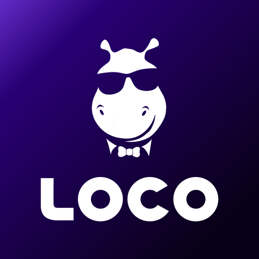

"Where gaming meets entertainment." - LOCO
LOCO is an interactive live streaming platform that focuses on gaming, quizzes, and engaging entertainment content. Launched in India, LOCO has quickly gained popularity among gamers and content creators for its unique features and interactive capabilities.
The platform allows users to watch live streams of popular games, participate in quizzes, and interact with streamers in real time. With a vibrant community, LOCO provides a space for gamers to connect, share their experiences, and discover new content.
LOCO's mission is to create an engaging environment where users can enjoy gaming and entertainment while fostering connections among fans and creators alike.